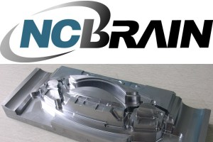

|
NC
Brain Genel
Kalýpçýlýk
endüstrisi yüksek kalite ve kýsa imalat sürelerine ihtiyaç
duyar. Bu isteklerin yoðunluðu sürekli olarak artmaktadýr.
Zamanýmýzýn piyasa þartlarýnda, NC makina kesim iþlemleri
kalýpçýklýk endüstrisi ve piyasasýný tatmin edecek yenilikçi
yollara yönelip kendini geliþtirmeli ve rekabeti ilerletmelidir.
Kalýbýn iþlenmesi süreci en çok para ve zaman gerektiren kýsýmýdýr.
Fakat NC makinelerin iþleme süreçlerinde birçok zorluklar
mevcuttur. Ýþleme süresi ve bitiþ kalitesi CAM datasýna ve
operatörlerin yeteneðine baðlý olarak deðiþmektedir. NC makinesinin
iþletimi çoðu zaman kesim bilgisinin eksikliði nedeniyle akýcý
bir þekilde ilerleyemez.
Bu
sebeple, hata oranýný düþürmek zordur ve ATC (Otomatik Takým
Deðiþimi) kullanýmýnda üretkenlik maksimize edilemez, üretkenlik
düþecektir.
NC
Brain iþleme simülasyonu ile bu zorluklarýn tamamýný çözer.
Simulasyon sýrasýnda, NC Brain CAM datasýný pratik olarak
optimize edilmiþ yeni bir NC datasýna çevirir. Ýþleme sürecinde
CNC'nin daha verimli çalýþmasýný saðlar, ve daha az ve kolay
iþleme operasyonlarý ile atölyedeki stresi azaltýp, güvenli,
kaliteli, huzurlu çalýþma ortamý oluþturur.
NC
Brain üretkenlik artýrýmý, kalite geliþimi için en iyi sistem
olacaktýr, bunu kullandýðý standartlarýn üzerindeki seçkin
teknolojisi ile saðlayacaktýr.
NCBRAIN
Firma tanýtýmý
Cloud
Hwang, NCB Overseas Marketing Manager
www.ncbrain.com
NC
Brain, 7 yýl içerisinde KAIST (Korea Advanced Institute of
Science & Technology) saðladýðý sermaye ile kurulmuþtur
ki burasý Kore'deki en seçkin mühendislik merkezidir. Bu ürün,
JY SOLUTEC www.jysolutec.com
firmasýna, dünya çapýnda kalýp yapan ARRK www.arrk.co.kr
firmasýna, ve NC Brain satýlmaya baþlandýðýndan beri 200 farklý
þirkete 600 kopya satýldý.
NC
Brain sadece bir araþtýrma enstitüsündeki doktorlar ve profesyonel
programcýlar tarafýndan üretilmedi. Þirketin tüm NC mühendisleri
NC brainin baþlangýcýndan beri yazýlýmýn geliþiminde yardýmý
oldu. NCB þirketinin baþýnda bir R&D merkezimiz bulunmaktaydý
ki her kalýp yapan þirketle benzer bir ortam bulunmaktaydý.
Bu nedenle diyebiliriz ki NC Brain, NC mühendisleri için oldukça
pratiktir.
Ýþlevsellikler
NC
Brain'in fonksiyonlarýný tanýtmadan once þunu belirtmeliyiz
ki aþaðýda gösterilen fonksiyonlar tek baþýna çalýþan özellikler
deðildir. Simulasyon sýrasýnda hepsi ayný anda çalýþmaktadýr.
NC Brain deðiþikliðe ihtiyacý olan tüm takýmyollarýný inceleyip
gerekli deðiþiklikleri yapacaktýr.
30'dan fazla fonksiyon bulunmakta ancak bu tanýtýmda yalnýzca
5' i üzerinde durulacaktýr.
- Kesim
Yükü Hesabý, Optimize edilmiþ Feed (ilerleme) deðerlerinin
otomatik eklenmesi
Gerçek Kesim yükü geometri boyunca deðiþmektedir, CAM programýnýzda
siz sabit Feed (ilerleme) tanýmlarsýnýz fakat gerçek kesim
þartlarýný düþündüðünüzde kesici takýmýn geometri boyunca
maruz kaldýðý kuvvetler sürekli deðiþkendir ve sizler bunu
hesap edemezsiniz, NCbrain kesim süresi boyunca takýma gelen
yükleri sürekli olarak kontrol eder ve kullanýlan NC makine,
takým, takým yolu ve kesilen malzeme özelliklerini dikkate
alarak en uygun kesme þartlarý için Feed (ilerleme) deðerlerini
CAM datasý içerisinde otomatik olarak ayarlar.
Örnek bir parça için normal feed deðerleri F1000 olacaktý.
Ancak NC Brain ile artýk feed deðerleri otomatik olarak
F800 ile F4000 arasýnda deðiþim gösterecektir.
Daha hýzlý ve daha güvenli iþlemeye olanak saðlayacaktýr,
bu sayede NC makine, takým maliyeti
Daha düþük olacak üretkenlik daha kaliteli olarak sürekli
sabit tutulacaktýr.
- Kesim
Yükü sabit tutularak kaliteli yüzey elde etmek,
RPM (devir) iç ve dýþ kesimlere göre deðiþiklik göstermelidir.
Fakat CAM datasý içerisinde sizler sabit bir RPM (devir)
tanýmlarsýnýz, gerçek kesimde RPM (devir) deðerleri kesim
sartlarýna gore deðiþkenlik göstermek zorundadýr, Örnek
olarak küresel uç formlu bir takým kullanýrken datanýzda
takýmýn geometrisinin kontak olduðu yerler sürekli deðiþmektedir
ve takým güvenliðini, kesilen parça finish kalitesini yüksek
tutmak için NCbrain sürekli olarak takýmýn kontak olduðu
yerleri analiz ederek RPM (devir) i gerektiðinde otomatik
deðiþtirir. Bilindiði üzere kürel formlu takýmlarýn uç noktasý
parçaya teðet olduðunda RPM (devir) maksimum tutulmalý,
takýmýn dýþ kenarlarýndan da teðet olduðu zaman devirin
düþmesi gereklidir, NCBrain bu devir ayarlamasýný otomatik
olarak kullanýlan NC makine, takým, ve kesilen malzeme özelliklerine
göre ayarlar.
- Linear
(G1) den Ark (G2, G3)'a Çevrim ve eski kontrol makinalarý
için feed kontrolü
NCBrain Eski tip bir fonksiyon olarak kullanýlan modül sorununu
köþe parçasýnýn çembersel kesimi ile çözer ve geniþ datalar
da, otomatik ivmelenme/yavaþlama oluþturur. Bildiðiniz üzere
üst kesimlerde feed düþmesi ve köþelerde sallanma gibi kalite
düþüklükleri oluþturan sorunlar olmaktadýr. Ama, görmektesiniz
ki pürüzsüz bir yüzey kalitesi için uyumlu artýþ/azalýþ
ivmelenmesi ile iþleme bölgelerinde kalite saðlanarak iþleme
süresinde %30 azalma olur ve kalite yükselir. Bu sayede
eski tip kontrollü NC makinelerinizde bile yüksek performens
ve daha iyi yüzey kaliteleri elde edersiniz, NCBrain G1
hareketlerini istenirse otomatik olarak G2/G3 dairesel forma
çevirir, istenirse tersi durumda söz konusudur, G2/G3 hareketlerini
G1 çizgisel forma da çevirebilir, bunu otomatik olarak sizin
tercihlerinize gore kendisi ayarlar.
- Aþýrý
yüklenmeye maruz kalan bölgelere ekstra takým yolu ekleme
CNC'nin kesme sýrasýnda aþýrý yüklenmelerin olduðu bölgelerde
feed deðerleri düþük olmalýdýr. Ya da tezgahý durdurup ek
olarak CAM desteðine baþvurulmalýdýr. NC Brain aþýrý yüklenme
olan yerleri otomatik olarak algýlar ve bu bölgelerde otomatik
olarak ara yeni takýmyollarý oluþturarak aþýrý yük oluþturan
bölgelerde bu sorunu çözer. Takým kýrýlma riskini ortadan
kaldýrýr, en optimum kesme þartlarýný sürekli kontrol ederek
otomatik olarak saðlamaktadýr.
- Boþ
kesim yolu minimize (hava kesim sýnýrlamasý)
CAM iþlemesi sýrasýnda boþda kesim takým yollarý %5 ila
%30 arasýnda deðiþmektedir. Bu da iþleme süresini uzaltmakta
ve düzensiz kesim ortamý oluþmasýna sebep olmaktadýr. CAM
datanýzdaki takým yollarýndaki gereksiz fazla kalkma ve
inme (G0) hareketlerini minimize eder ve takýmýn parça kesmeden
yaptýðý hareketleride otomatik olarak siler ve takým yollarýnýzý
yeniden düzenli þekilde oluþturur. Bu sayede minimum mesafede
takým konumlandýrmasý yaparken CNC makine kontrollerinden
meydana gelebilecek çarpma olasýlýklarýnýda analiz ederek
çarpma olmaksýzýn takým kýrmadan çok hýzlý çalýþma ortamý
oluþturur.
Bu
sayede güvenli, kaliteli, kýsa iþleme süreleri saðlanmaktadýr.
Çok
önemli bir konu da takým ve tutucu boylarý ayarlamaktýr, NCBrain
simulasyon sonucunda size Takým ve tutucu uzunluklarý bölümünde,
kullanýlan takýmlara ait, takým boyu ayarlama bilgisi, özellikle
takma uçlu takýmlarda ölü merkezi hesap edip takýmýn alt yüzeyinin
zarar görmemesi için takým yolunu bu deðerlere göre otomatik
olarak düzenleyerek oluþturur, bu yeni þartlara gore en uygun
takým yolunu yeniden oluþturarak, otomatik post deðiþimine
ekler, ve diðer deðiþim fonksiyonlarý NC Brain dahilinde otomatik
olarak kontrol edilmektedir. Pratik kullanýmda siz CAM yaparken
takým ve tutucu hesaplamasý yapmak zorunda kalmazsýnýz NCBrain
bütün koþullara gore Takým ve Tutucu ayarlama deðerlerini
rapor halinde sunar.
Bu
durumu kapsamlý olarak ele alýrsak; zamandan, takýmdan, iþ
stresinden kazanç saðlanmakta. Aþýrý yüklenme olan bölgelere
takým yolu eklemek, Aircut takým boþta kesimi minumum, Feed
kontrolü gibi tüm fonksiyonlar NC Brain bir kütük modeli ile
çalýþtýrýldýðý an otomatik kullanýlmakta. NC Brain kullanarak
NC datalarý güvenli ve hýzlý bir þekilde iþlenebilinir. Bu
daha verimli çalýþmak için bilinen en iyi yoldur.
Sonuç
NC
Brain pratik olarak kalýp iþleme sýrasýndaki NC iþleme özelliklerini
arttýran bir yazýlýmdýr. Nerdeyse CNC'de kalýp iþleme hakkýnda
bilinen tüm teknoloji ve teknikleri NC Brain in dijital hafýzasýnda
yerleþtirilmiþtir. Ve böylece her türlü çalýþma ortamlarýna
göre kesim türünü otomatik olarak sürekli bir þekilde bu duruma
adapte edecektir.
Yani,
NC'de iþleme daha hýzlý ve daha güvenli bir þekilde sonuçlandýrýlabilinir.
NC operator mühendisleri için yararlý bir araç olacaktýr.
NC Brain kullanan firmalarda yapýlan araþtýrmalar sonucunda
üretim ortalama olarak %27 arttýðý gözlemlenmiþtir.
Ýþleme
süresi, takým ömrü, iþlemenin kolay kontrolü, ve sayýlamayacak
kadar diðer avantajlarý bulunmakta, bu avantajlara iþlem stresini
azaltarak çalýþanlara pozitif etkisi olacaktýr.
NC
Brain Pazar içinde yeni bir rekabet ortamý oluþturacaktýr
ve Türkiye'deki kalýp endüstrisine büyük kazançlar saðlayacaktýr.
 Ýrtibat: Ýrtibat:
Tarýk
ÇERÇÝ
Tarik@zirve-yazilim.com
Zirve Yazýlým Danýþmanlýk
Cihannuma Mah. Selamlýk Cad. No:32/1
Beþiktaþ / Ýstanbul
Tel: (212) 327 05 12
www.zirve-yazilim.com
|